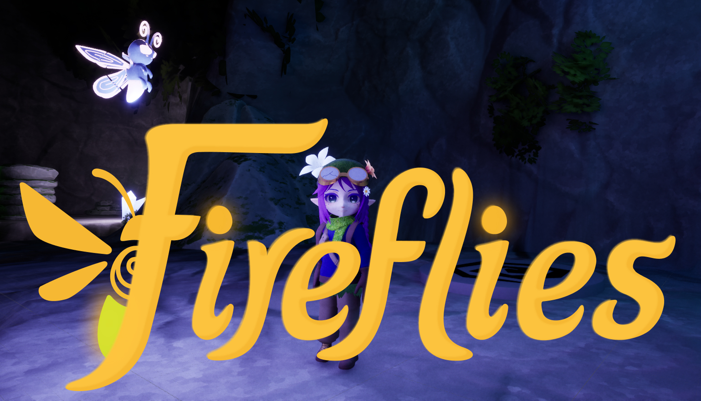

Abstract
A vertical slice of a 3D stealth puzzle-action adventure game set within a single section of a whimsical, dark cavern environment where light is both a tool and a risk. This project was created with and for Noctua Interactive.
Links to Project
Role in Project
Game Team Leader, January - May 2026
- Directed a group of four other programmers in creating a vertical slice.
- Conceptualized and programmed new game mechanics from the ground up.
- Collaborated across multi-disciplinary teams to meet deadlines.
- Implemented UI elements and models created from other teams.